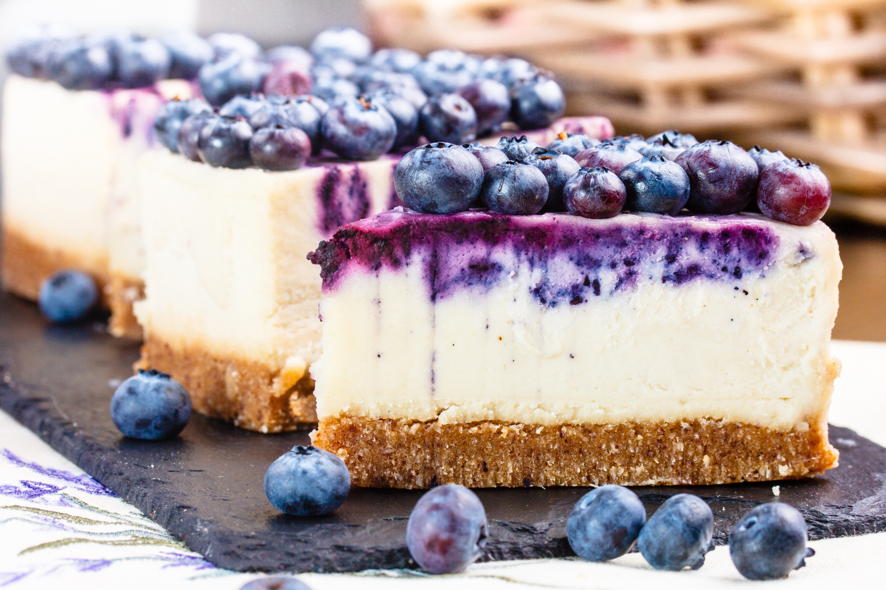
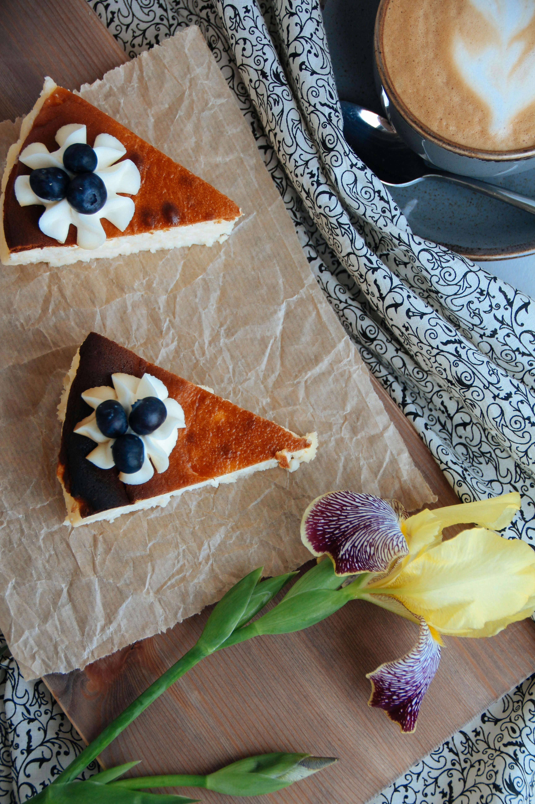
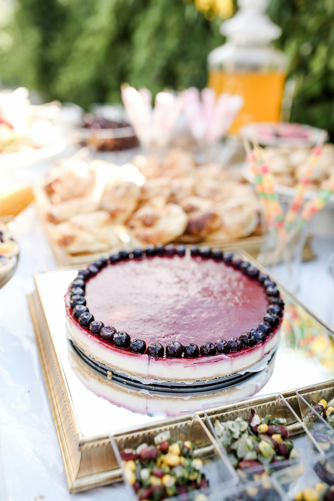
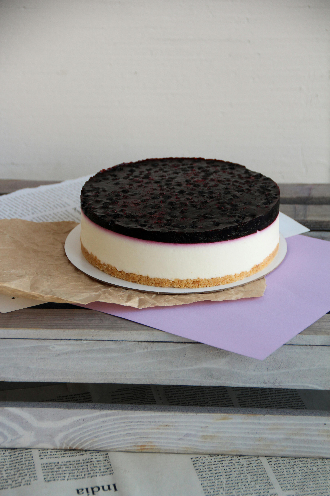
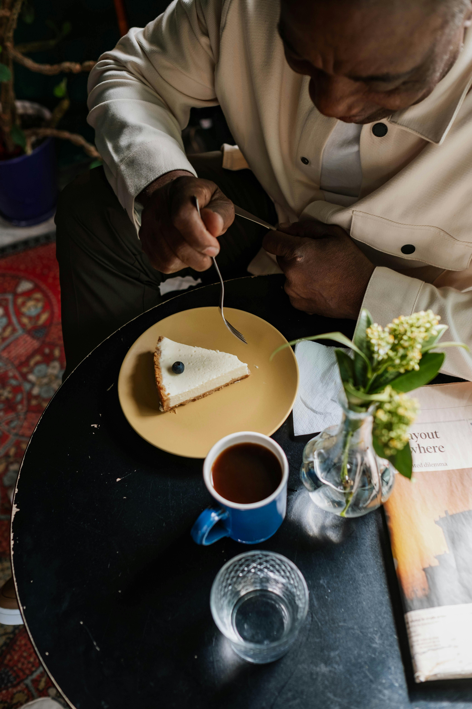

Blueberry Cheesecake Recipe
| |
The History and Popularity of Blueberry Cheesecake
Blueberry cheesecake is a beloved dessert worldwide. It combines rich cheesecake with blueberries...
Origins of Cheesecake
The origins of cheesecake can be traced back to Ancient Greece...
By the time cheesecake reached America...
The Role of Blueberries in Cheesecake
Blueberries, native to North America...
Recipe
Ingredients
- 1 cup graham cracker crumb
- ¼ cup melted butter
- 2 tablespoons white sugar
- 2 (8 ounce) packages cream cheese, softened
- 1 cup sour cream
- ¾ cup white sugar
- 2 tablespoons all-purpose flour
- 1 teaspoon vanilla extract
- 4 large eggs
- 2 cups frozen blueberries, dry pack
- ⅓ cup blueberry jelly
Method
Step 1
Preheat the oven to 325°F (165°C).
Step 2
Mix graham crumbs, melted butter, and 2 tablespoons sugar...
Nutrition Facts
Servings Per Recipe: 12
Calories: 356
| Nutrition | Amount per Serving |
|---|---|
| Total Fat | 23g |
| Saturated Fat | 14g |
| Cholesterol | 122mg |